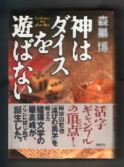

タイトルがタイトルなんで、パッと見たときはサイコロの出目を数学的に解析した本かと思った。帯の惹句を読み直して、そうではないことはすぐ分かったが、「賭博文学の最高峰」という惹句に乗せられて、つい買ってしまった。
中身は、世界のカジノ（賭博場）で常打ちの賭博人を目指す主人公が、主としてオーストラリアのカジノを舞台に、負けたり勝ったりするストーリー。基本的には著者の体験がベースになっているという。
読後の感想としては、正直云って「“最高峰”は言い過ぎだろう」という感じ。。。。σ(-_-)としては、阿佐田哲也の「ドサ健バクチ地獄」とか、「ヤバ市ヤバ町雀鬼伝」の方がはるかに面白かった。
といっても数年前には「今世紀最後で最大の話題作」なんてのがたくさん出版された。また21世紀は始まったばかりだけれど、早くも「今世紀最大の話題作」がいくらでもありそう。そこで「賭博文学の最高峰」にも、あまり文句を言う気にもならないが。。。
いずれにしてもそれだけの話なら麻雀には関係ないので、このサイトで取り上げることもない。しかし中に麻雀に関係した箇所が２カ所あるので、取り上げる気になった。
まずはコラムのタイトルにもした「向こう打ち」
各カジノには専属のディラーがいる。彼らは非番のときでも、自分のカジノでバクチをすることはできない。そこで自分がバクチしたいときには、よそのカジノにお客さんとして出かける。
で、この本には、「新人ディラーが自分の勤務する以外のカジノへ出かけて打つことを、日本の非合法の賭博用語で“向こう打ち”という」とある（P25）。この発想でいけば、日本の非合法の賭博でいう“向こう打ち”は、或る鉄火場の専属の壺振りかなんかが、よその鉄火場へ客として出向いてバクチするという意味となる。しかしこれは本来の意味とは少し違うような気がする。
σ（-_-）は賭博用語としての “向こう打ち”は、或る鉄火場の専属スタッフとか何とかに関係なく、対等の条件であるはずの場所で、「ルール・条件など、すべて相手側の条件を呑んでゲームすること」と理解している。それこそいま人気のコミック「むこうぶち」で、主人公の傀がさまざまな場所で、どんなルール・条件でも受け入れてプレーしているような状況の話だ。
たしかにカジノでは、ルール・システムなどすべてカジノ側の条件でプレーする。その意味では
“向こう打ち”と云って言えないことはない。しかしカジノでは、客がルール・システムに注文をつけるなんてハナから出来るわけがない。カジノ側の条件でゲームするということがそもそもの前提だ。
それに或るカジノのスタッフがよそのカジノへ出かけたとしても、そのカジノにとっては単に新しいカモ、じゃなかった、お客が１人来たというだけの話。間違っても“向こう打ちでＯＫ”というすごいギャンブラーが登場したとは思わない。その点から考えると、この本でいう“向こう打ち”は、本来の意味とはちと異なるような気がする。
麻雀に関するもう一つの箇所は、主人公が日本で麻雀名人と対局したときのエピソード。要約すると、こんな感じ。
或る人の紹介で麻雀名人と対局することになった。名人と打つなど、恐ろしくて深刻な麻雀など打てない。そこでレートも低くして、酒を飲みながら下世話ばなしをしながら鼻歌まじりで打った。ところがそんなお遊びの小バクチ麻雀なのに、麻雀名人は酒も飲まず、鼻歌も唄わず真剣に打っていた。当然のことながら名人の１人勝ち。すると名人は勝ち金を懐におさめながら「獅子は鼠を殺すにも全力を尽くす」と云った。
それを聞いて、失礼ながら大笑いして椅子から転げ落ちてしまった。負けてもたかが１人あたり10数万円、合計で40万円程度の小バクチ。それも酒を飲みながらの遊び麻雀。そんなお遊び麻雀に勝ったといって自分を獅子に、相手を鼠にたとえるなど理解不能で度し難きアホだ。
そこで「麻雀名人と云っても、この程度の人間なら永く持たないだろう」と思った。すると案の定、しばらくして名前を聞かなくなった。今頃はどこかの排水溝の中で「全力」を尽くして鼠を殺していることだろう。
という話（P69）。
このくだりを読んだ正直な感想。「目クソが鼻クソを笑ってら....」
たしかに自分を獅子にたとえ、対局相手を面と向かって鼠よばわりするなどまことに失礼千万。そんなんでは、「永くは持たないだろう」と云われても仕方がない。しかしσ（-_-）としては、「じゃあホントにあんたは鼠じゃなかったの？」と聞き返したい....
ここに登場する麻雀名人が誰の事かは知らないが、麻雀では名人・達人といっても囲碁・将棋とは中身が違うというのは理解できる。また見ていたわけじゃないからヘタな事も言えないが、仮にも麻雀名人として紹介された以上、「恐ろしくて」、あるいは「レートも低くして」はともかく、「酒を飲みながら下世話ばなしをしながら鼻歌まじり」というのは、その時点で失礼千万の極み。
いわば麻雀名人はゲームが終わったとき、対局者をバカにしたかも知れないが、主人公はゲームが始まった時点で相手をバカにしている。
また主人公は常打ち賭博人として、カジノではコンスタントに数百万円、大きいときには数千万円のバクチを打つという。そんな主人公にしてみれば、総額４，５０万円のレート麻雀はお遊びの世界というのも事実だろう。
しかし「４，５０万円のレート麻雀はお遊びの小バクチ」というのは、主人公のレベルの話。そんな主人公でも、一日で数千万円負けたときは呆然として、二度とバクチはしないでおこうと思ったという。しかしこの本には、億単位の金を平気で賭ける「大口賭博人」が何人も紹介されている（ハイローラーとかホエール（巨鯨）と云うそうだ）。
そんなハイローラーにして見れば、主人公が呆然自失したという数千万円の負けでも、負けたという意識さえ感じないだろう。単純に云えば、小バクチかどうかはプレーヤーの金力によって異なる。ましてや日本には政府公認のカジノは存在しない。
そういう環境のなかで数時間のゲームで数十万の金が動くのは、一般の感覚では決して小バクチではない。麻雀名人が「酒も飲まず、鼻歌も唄わず真剣に打っていた」のは当然とも思われる。
にも関わらず、自分の金力を基準に数十万円のやりとりを小バクチといって鼻先であしらい、相手を「度し難きアホ」と評する感覚では、主人公自体、「どこかの排水溝の中「全力を尽くして」逃げ回ることになりかねないと思う次第だ。
まぁ、主人公も「鼠」だと云われたことがよほど頭に来たんだと思ふけれど、この本の筆致に誘われてσ（-_-）も珍しくきつい書談になってしまったな。。。。(ー_ー)
|